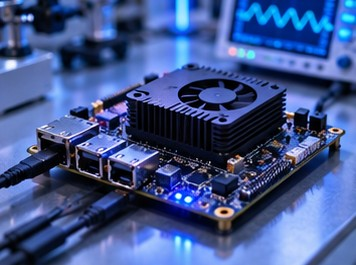

AI fundamentals
Learn how artificial intelligence, machine learning, deep learning, and generative AI fit together. Start with the basics
Shubham Pandey · Full stack developer
I’m Shubham Pandey. I use this site to share what I learn about AI, the projects I build, and the tools I find useful.
Learn how artificial intelligence, machine learning, deep learning, and generative AI fit together. Start with the basics
Count words and estimate reading time, then see how these rules differ from a model’s tokenization. Try the text analyzer
Explore how teams adopt AI and what developers should measure before relying on its output. Browse the journal
Shubham Pandey is a Full Stack Developer based in Gorakhpur, Uttar Pradesh, India.
View the portfolioI started SHUBH AI to keep notes on what happens when an AI feature leaves the demo and becomes part of a real website.
I’m interested in the practical work around the model, from building the API to checking answers and showing people when something goes wrong.
About SHUBH AI
Compare model size, latency, and output quality when running predictions on a laptop or an edge device.
Explore efficient AI inference
Retrieve candidate passages before drafting an answer. Check each citation against its source text.
Explore knowledge assistantsRecognize printed text, then validate extracted dates and totals against the original document.
Explore document extractionBuild a rubric for practice questions and give learners feedback they can inspect.
Explore interview practiceTrain on labeled examples. Use error analysis to find classes the model confuses.
Explore image classificationTest event detection on short clips with changes in lighting and camera position.
Explore video event detection
Study how glare and camera position affect an attention detector on recorded test clips.
Explore driver attention
Compare how composition, lighting and subject descriptions influence generated images.
Explore image generation
Combine multiple views into a point cloud and inspect gaps where surfaces were occluded.
Explore 3d reconstruction
Mark pixel-level regions and measure how accurately the model traces their boundaries.
Explore image segmentationSurface potential edge cases and link each suggestion to a test or relevant line of code.
Explore code review assistance
Use relevance judgments to compare keyword and semantic retrieval.
Explore search quality
Compare routes using travel times, time windows and constraints such as vehicle capacity.
Explore route planningIdentify abnormal changes in a device stream and separate transient noise from sustained drift.
Explore sensor monitoring
Plot missing values and distributions before asking a model to summarize a dataset.
Explore data explorationUse masks to isolate an object from its background and assess edge fidelity.
Explore image editingDraft practice questions from a source passage and verify that each answer can be supported.
Explore question generationCompare images of parts against labeled defects and record both missed defects and false alarms.
Explore defect inspectionCompare word errors across accents, noisy rooms and different microphones.
Explore speech transcription
Test recognition on unseen handwriting styles and preserve low-confidence candidates for review.
Explore handwriting recognition
Track each processing step, make retries safe and route uncertain output to a human reviewer.
Explore workflow orchestration
Locate objects in a frame, then measure how well the model locates small or overlapping items.
Explore object detection
Use a time-ordered split and compare predictions to a seasonal baseline.
Explore demand forecastingMeasure whether recommendations help users discover relevant items across different activity levels.
Explore recommendation systems
Match learning objectives to a skills inventory and let learners inspect and correct each match.
Explore skill mapping
Tune alerts with historical examples and check drift before increasing their reach.
Explore anomaly detectionCompare word counts, keywords and topic labels. Inspect where each method loses important context.
Explore text analyticsCombine automated markup checks with manual keyboard and screen reader review.
Explore accessibility checks
Align paragraphs by meaning and highlight wording changes for a reviewer to confirm.
Explore document comparisonDefine acceptable results and decide what falls outside the application.
Measure the current workflow and compare a simple rule or retrieval system.
Validate input and output, then add error handling and a review path.
Track quality over time and use failures to update the evaluation set.
Learn patterns from data and compare predictions on unseen examples.
Build representations across layers and test performance under changing conditions.
Use prompts and source material to guide output, then evaluate the results.

Combine decisions, routing rules and human review into a repeatable workflow.
Inspect product imagery and compare defect rates across lighting and camera setups.
Generate practice questions from a known reading and check each answer against the text.
Forecast demand and keep a manual override for unusual events.
Evaluate captions and transcripts using varied audio and speakers.
Compare notes across sources and verify summaries against the primary material.
Use assisted review to find edge cases and confirm each change with tests.
Define what counts as a correct result before collecting examples.
Check rare categories and scenarios that appear only occasionally.
Record typical and slow requests to find where users may need feedback.
Test incomplete inputs and external-service failures.
Limit data collection to what the feature actually needs.
Make corrections visible and reversible.
Test with keyboard controls and assistive technology.
Revisit benchmarks when data, dependencies or model versions change.
Machine learning Generative AI Deep learning Computer vision AI automation Full stack development
Explore application examplesCompare keyword rules with a text classifier on incoming documents.
Evaluate defect detection across multiple camera angles and material finishes.
Check whether retrieved passages support each answer.
Compare a seasonal baseline with a model on successive weekly holdouts.
Compare transcription quality for quiet speech and background noise.
Evaluate how well a segmentation mask preserves fine edges.
Compare coding agreement on ambiguous responses.
Review coverage across new and returning users.
Track which interface changes improve perceived loading times.
Pick a narrow task with examples you can verify. Measure a simple baseline before training or integrating a model.
Add review wherever an incorrect decision could affect people, publish information, or change important records.
The text analyzer and the learning chat run locally in your browser.
Document the input data, baseline, evaluation split, limitations and examples of failures.
Introduce AI to an existing workflow, then measure what actually changes.
Read about AI adoptionExplore model evaluation, data boundaries and resilient applications.
Read about future AI systemsLooking for my resume, projects, or contact details? Ask here.